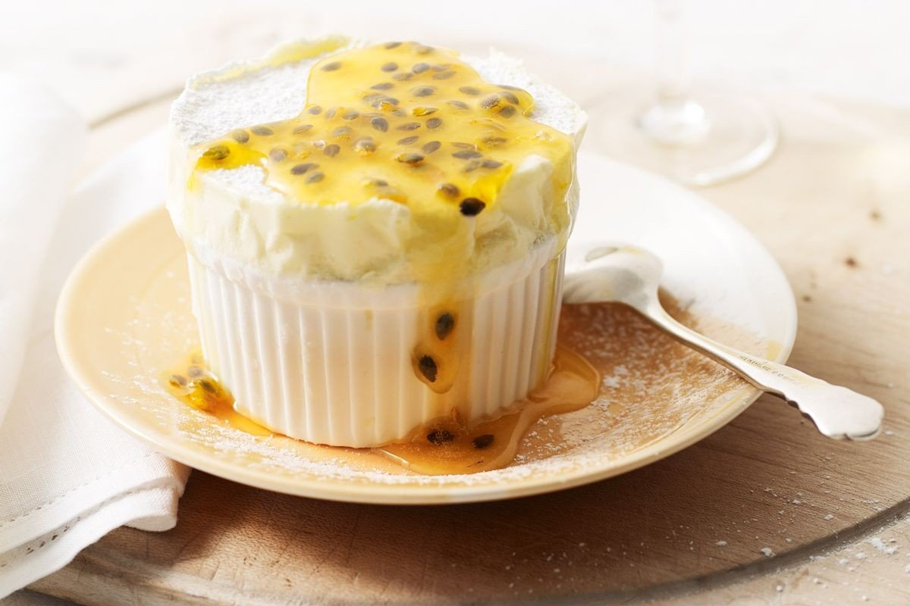

 Приготовить вкусный домашний пудинг можно всего за пол часа
Этот рецепт очень просто и его легко освоить
я ужин отдаю врагу,
но чай не выпить не могу
строка 3
строка 4
Я люблю математику х2
H2O
Ингридиенты добавлять по вкусу
первый шаг
что то еще от первого шага
второй шаг
что то еще от второго шага
что то еще от первого шага
\\\\\\\\\\\\-------------------//////////////
\\\\\\\\\\\\приятного аппетита//////////////
\\\\\\\\\\\\-------------------//////////////
© Все права защищены! < Готовить этот пудинг можем только мы!>